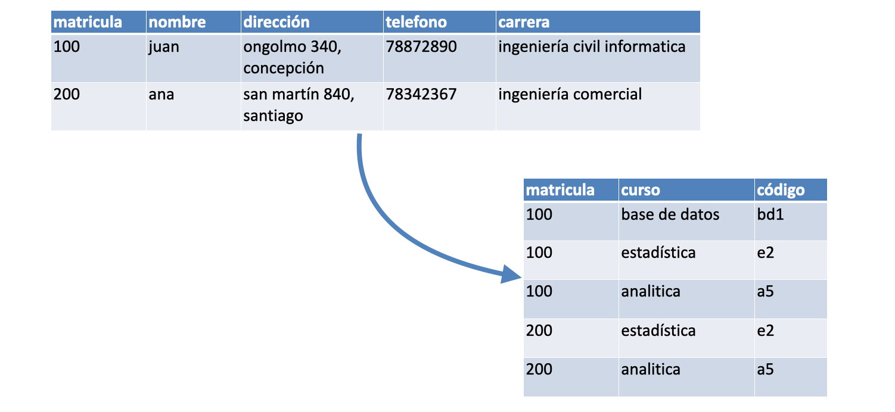
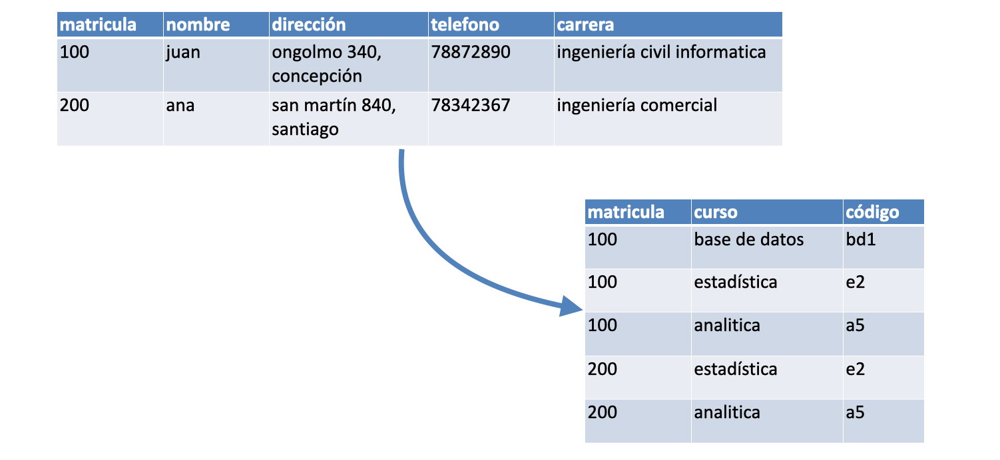

Normalizacion
La normalización de una base de datos diremos que es una técnica aplicada durante el Diseño Lógico con el objeto de optimizar la estructura de los datos de un sistema de información en el modelo relacional.
Esta técnica no es nueva, fue desarrollada por E.F. Codd en 1972 y es ampliamente utilizada hasta nuestros días.
Pasos para normalizar una base de datos
El proceso de normalización se realiza en pasos consecutivos que se denominan Formas Normales. Las formas normales deben ser aplicadas a todas las tablas de una base de datos. Por lo tanto, cuando afirmamos que una base de datos se encuentra en la Forma Normal N estamos asegurando que todas sus tablas lo están.
En general, las tres primeras formas normales son el mínimo que deben cubrir la mayoría de las bases de datos y, aunque son posibles otros niveles de normalización, es considerado como el máximo nivel necesario para la mayoría de las aplicaciones. Cada uno de estos niveles cumple con ciertos requisitos que tienen el objetivo de simplificar la información sin que exista una pérdida de datos.

 

Formas normales
Una tabla estara dentro de la forma normal si, y solo si, cumple con estas reglas especificadas en cada regla.
Primera Forma Normal (1FN):
- ● Todos los datos son atómicos.
- ● Todos los atributos o columnas son del mismo tipo de datos.
Segunda Forma Normal (2FN):
- ● Si la tabla está en la primera forma normal.
- ● Los atributos que no forman parte de ninguna clave han de depender funcionalmente de toda la clave primaria.
Tercera Forma Normal (3FN):
- ● Si la tabla está en la segunda forma normal.
- ● Los atributos no-clave no pueden depender de forma transitiva de una clave candidata (cuando un atributo que no sea clave depende de una clave primaria a través de otro atributo que no sea clave).
Cuarta Forma Normal (4FN):
- ● Si está en la forma normal de Boyce-Codd.
- ● Si no contiene más de una dependencia multi-valor
Quinta Forma Normal (5FN):
Básicamente, una tabla está en la quinta forma normal, cuando no puede ser dividida en tablas más pequeñas con diferentes claves (la mayor parte de las tablas se pueden dividir en tablas más pequeñas con la misma clave).
Forma Normal de Boyce-Codd:
- ● Si está en la tercera forma normal.
- ● Si cada determinante (es un atributo que determina el valor de otro atributo) es una clave candidata.